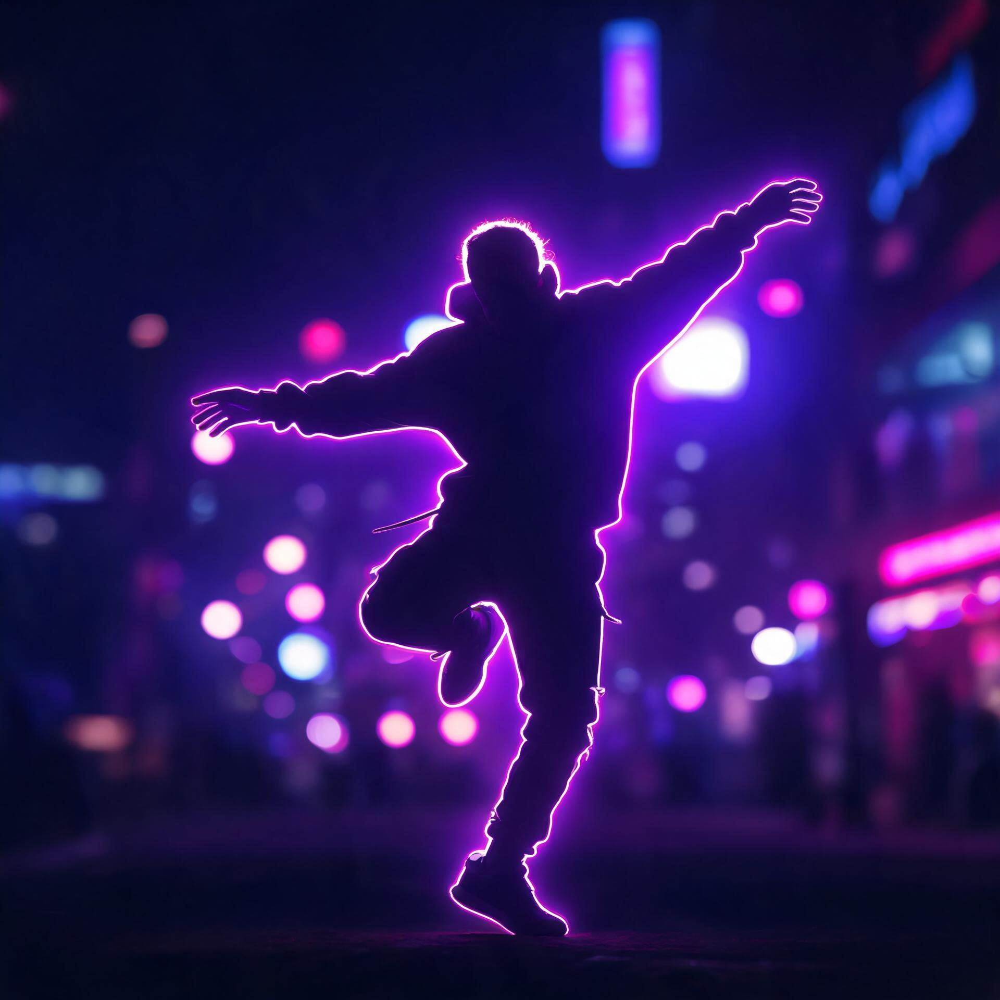
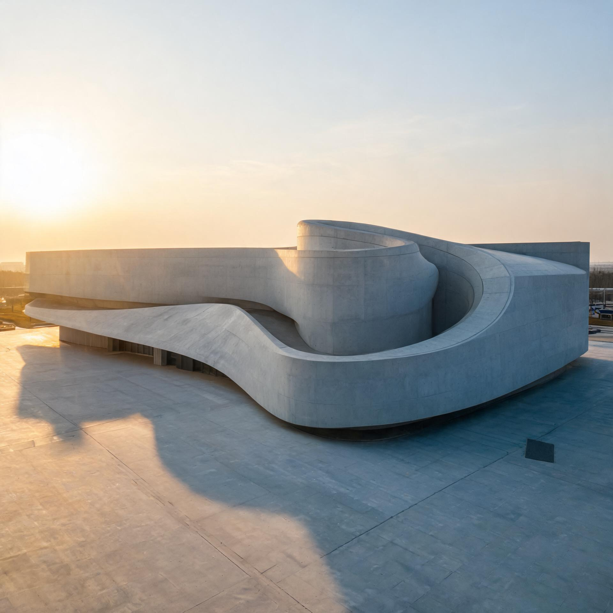
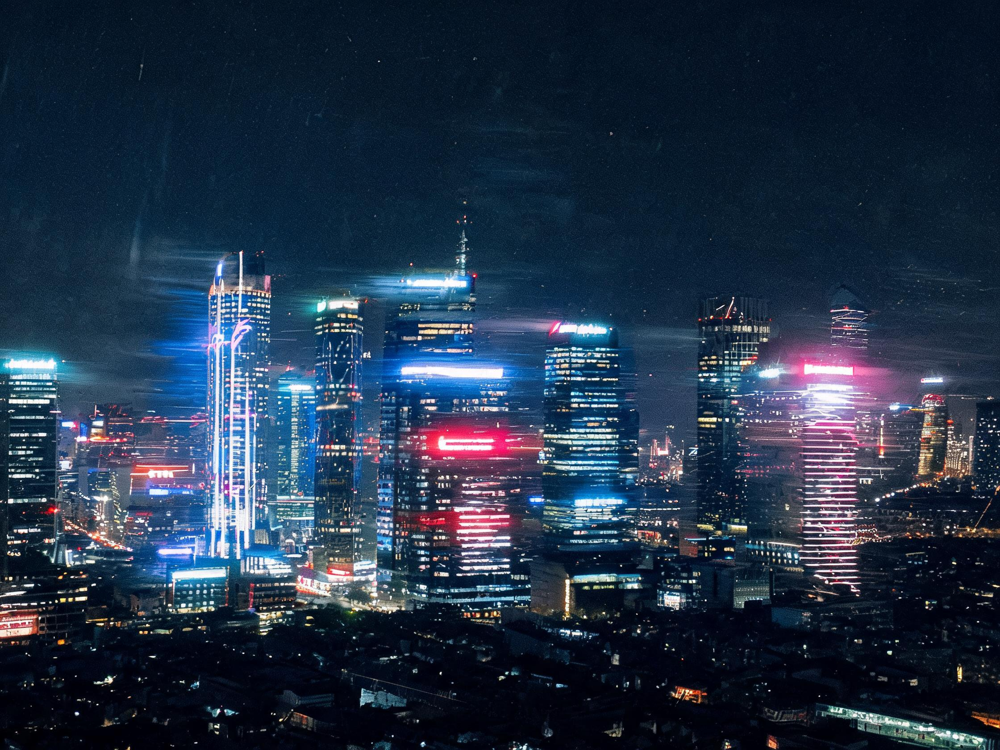

纯净无界，极致无损。
TokPure 桌面端短视频下载 与 AI 修复工作站
完全基于本地离线引擎驱动，macOS 与 Windows 双平台同样强悍。零云端中转、零画质压缩损伤、原生母带直连提取或毫秒级神经补全。

dance_trend_tokyo_4k.mp4

arch_tour_nordic.mp4
culinary_artisan_prep.mov

工业级桌面流处理，重塑无水印提取范式
TokPure 专为追求极致效率与内容纯净度的数字归档师、MCN 机构剪辑师与科研工作者打造，全面释放 Mac 算力潜能。
原生无水印源流直取
底层逆向解析直接穿透社交分发网络，精准截获源服务器无重编码的纯净原片 MP4 格式，彻底规避二次转码导致的色阶断裂与噪点。
CoreML 神经补全重构
针对烧录在视频关键帧内的跳动文字、静态角标及片尾全屏动态 Logo，使用双向时间注意力机制 (ST-Inpainting) 毫秒级修复，宛若原生未加。
多任务并发批处理矩阵
一键黏贴创作者主页合集，或导入 TXT/CSV 包含数千条短视频链接的清单。异步线程池与断点续传支持，夜间挂机自动化归档无需人工干预。
本地回环网络安全沙箱
内置反指纹探测引擎与动态 User-Agent 轮换。全链路遵循零外部服务器日志政策，支持绑定本地 SOCKS5/HTTP 节点，彻底杜绝 IP 限流。
本地原生客户端 vs 传统网页云端解析
为什么严肃创作者与企业团队纷纷弃用简陋的 Web 网页版去水印工具，转向 TokPure 本地工作流？
| 评估维度 (Metrics) |
verified
TokPure 桌面客户端
|
普通在线网页/云端去水印 |
|---|---|---|
|
解析提取速度
单条 1080P/4K 视频直链处理
|
bolt 0.28 秒 (本地并发直取) | 8 ~ 25 秒 (排队上传 + 云端编码 + 漫长等待) |
|
画质输出品质 (PSNR)
峰值信噪比与色彩失真度
|
check_circle 49.2 dB · 无二次二次压缩 | 28.4 dB (强制降级 720P，模糊严重) |
|
隐私与文件版权安全
原片内容数据归属与留存风险
|
lock 100% 离线沙盒运行 · 零泄露 | 所有未发布素材强制上传第三方未知云服务器 |
|
批量批处理能力
面对百级、千级作者合集归档
|
dataset 无上限并发 · 挂机导出 | 单次限 1-3 条 · 充斥垃圾广告与弹窗验证码 |
最高释放 16 核 Neural Engine 全部潜能
TokPure 已针对 Apple M1/M2/M3/M4 系列芯片完成 Metal 3 底层着色指令集特化调优。
立即开启极速无损视频重构体验
完全支持 Apple Silicon M1-M4、Intel 64 位 Mac 与 Windows 11 / 10 x64 设备。下载即享免费原生无水印解析，解锁短视频处理新高度。